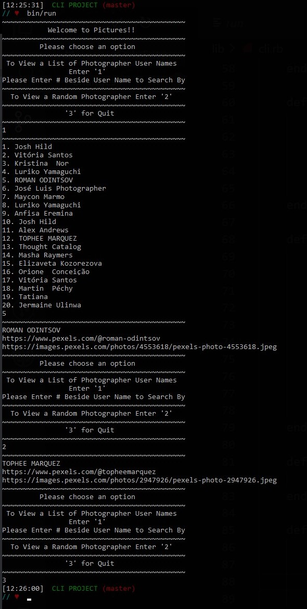
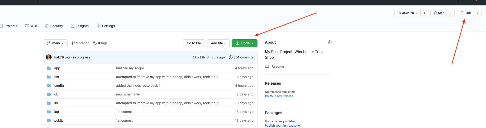

Portfolio
CLI PROJECT
CLI PROJECT is a ruby program that requires command line interface interaction (thus the name). It demonstrates OOP, DRY, and SRP.
Description:
The program provides either a list of photographers to choose from or a random photographer which it then displays the photographer name, photographer URL and the URL of an original picture.Installation Instructions:
Clone the CLI Project from CLI PROJECT into it's own folder. Request an API from Pexels API and add it to your .env file, which you must create. Type the following in your terminal or command prompt window: gem install dotenv bundle install bin/run *Verified to work with ruby 2.7.1*Contributors Guide:
Thank you to Pexels for the API. Thank you to httparty, dotenv and pry from Ruby GemsLicense:
MITCLI PROGRAM Run Through
CLI PROGRAM Walkthrough
BoardGames Top
Description:
BoardGames is a Sinatra GEM running on ruby program. It demonstrates CRUD and SRP. The program is a series of HTML pages that demonstrate a game's CMS (Content Managment System).Installation Instructions:
Clone BoardGames into it's own folder. Type the following in your terminal or command prompt window: bundle install shotgun Open URL that shotgun says to Explore the web pages.Contributors Guide:
Thank you to Pexels and the artist Pixabay for providing the background art.License:
MITBoardGames LogIn Page

BoardGames Walkthrough
kimkohelhayes.com aka MyWebsite Top
Description:
MyWebsite is primarily an HTML project, with over 40% CSS and less than 1% Java Script. It is intendended to be a visual CV, displaying my Resume, Blog, Porfolio, About and Contact pages.Contributors Guide:
Thank you to Pure for the framework.Thank you to Pexels and the artist picjumbo for the artwork on Contact.Stretch Goals:
I own the Domain name kimkohelhayes.com The plan is to migrate this site to ruby on rails then host it on Heroku or AWS.License:
My image, blogs, portfolio and email are mine. Everything Else: MITwinchestertrimshop.com Top
Description:
winchestertrimshop is 56% an HTML project, with over 43% CSS and will include some JS. It is intendended to drive customer traffic to a small automotive upholstery shop. It will include Home, Gallery, About and Contact.Contributors Guide:
Thank you to Munna Bhakta for contributing to teach me so much! Thank you to Bootstrap for the framework.Stretch Goals:
The owner of Winchester Trim Shop owns the domain name winchestertrimshop.com The plan is to migrate this site to ruby on rails then host it on AWS.License:
This web site is © Winchester Trim Shop. Design is © Kimberly A Kohel-Hayes.railsWTS Top
Table of contents
General info
This project is a website for an automotive upholstery shop. It allows users (the shop workers) to log in via google or to create new users and log in on the site. A user can create a vehicle owner, cars and campers that belong to that owner. A user can edit it's profile and add an avatar. A user can add up to 2 pictures to each car and camper. A user can see the oldest and the newest car and camper and their owner on record on the owner's home page.
Technologies
railsWTS is created with:
- Ruby version: 2.6.1
- Ruby on Rails version: 6.0.3
- Bootstrap version: 3.4.1
- Omniauth Google Oauth 2 version: 0.8.0
Setup
To run this project, fork and clone it from:
hereHow to Fork and Clone
Click on fork and then click on the green box that says code on it and clone the the repository. Open a terminal of your choice in the directory where you want the app and enter the following commands.
mkdir folder_name
cd folder_name
git clone YOU_PASTE_THE_CODE_YOU_COPIED_FROM_BENEATH_THE_GREEN_BUTTON
Google API Setup
Go to the Google Developers ConsoleSelect or make your project.
Go to Credentials, then select the "OAuth consent screen" tab on top, and provide an 'EMAIL ADDRESS' and a 'PRODUCT NAME'.
Wait 10 minutes for changes to take effect.
- Create a `.env` file in the main directory of the railsWTS project.
- Put your client ID and Secred into your `.env` file as shown below
GOOGLE_CLIENT_ID=
GOOGLE_CLIENT_SECRET=
Bundle && Yarn
The next steps are to install your Gemfile and make sure that yarn is up to date. In the terminal of your choice...
bundle
If yarn complains, follow the directions to update it, if not, then you should be OK.
Database Migration
Next you will need to migrate your database. In the terminal please type the following.
rails db:migrate
Start your Server
In order to start your rails server and display the railsWTS app in the browser please type the following in your terminal.
rails s
Now open a browser tab and enter this url
http://localhost:3000/login
Thank You!